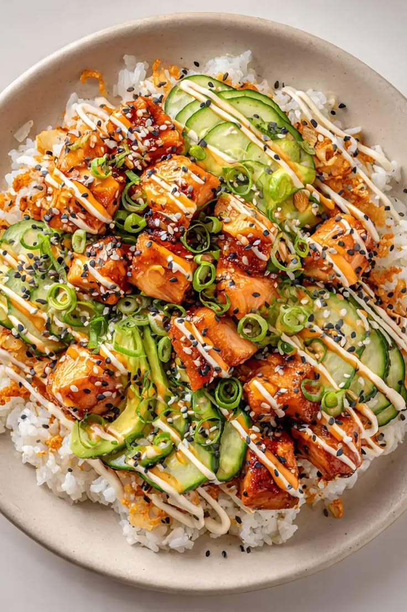

Salmon Rice Bowl
Warm rice topped with flaked canned salmon, creamy sauce, and crunchy cucumber.

Ingredients
- 1 cup of warm cooked rice
- 1 can (about 100 grams) of salmon, drained
- 1 tablespoon of mayonnaise mixed with 1 teaspoon of soy sauce
- 1/4 cucumber, sliced
Equipment
- Bowl
- Fork
- Small bowl for the sauce
- Cutting board and knife
Instructions
- Heat the rice in the microwave until steaming if it is cold.
- Flake the drained salmon with a fork, removing any large bones.
- Stir the mayonnaise and soy sauce together in a small bowl.
- Put the salmon on the rice, drizzle with the sauce, and add the cucumber. Sprinkle with sesame seeds if you have them.
Ingredient Notes
Contains fish, egg (mayonnaise), soy, and possibly sesame. Keep cooked rice in the fridge and eat within 1 day, and refrigerate opened canned fish promptly.
Make It Your Own
Add avocado, a squeeze of lime, a few drops of hot sauce, or strips of seaweed.